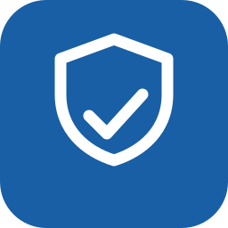

עמית מ.מAmit M.Mמתקינים פעם אחת, ומקבלים עזרה במחשב בכל פעם שצריך – בלי לצאת מהבית. הטכנאי מתחבר רק אחרי שאתם מאשרים.Install once and get help on your computer whenever you need it, without leaving home. The technician connects only after you approve.
הורדה ל-WindowsDownload for Windowsאתם תמיד בשליטהYou are always in control
לפני כל חיבור מופיעה בקשה על המסך, ושום דבר לא קורה בלי שתאשרו.A request appears on screen before every session. Nothing happens until you approve it.
כל התקשורת מוצפנת, והתוכנה מתחברת רק לשרת המאומת של עמית מ.מ.All traffic is encrypted, and the software connects only to Amit M.M's verified server.
אפשר לנתק את החיבור בלחיצה, ולהסיר את התוכנה דרך "אפליקציות" ב-Windows.End the session with one click, and uninstall any time from Windows "Apps".
ארבעה צעדים, פחות משתי דקותFour steps, under two minutes
לוחצים על "הורדה ל-Windows" ושומרים את הקובץ.Click "Download for Windows" and save the file.
פותחים את ZRM-Installer.exe ומאשרים את הודעת Windows.Open ZRM-Installer.exe and accept the Windows prompt.
מסמנים רק את רכיב הקליינט (התמיכה מרחוק).Select only the client (remote support) component.
מקלידים את סיסמת ההתקנה שקיבלתם מעמית, וזהו.Type the installation password you got from Amit, and you're done.
עמית ישלח לכם אותה. בלעדיה לא ניתן לחבר את המחשב.Amit will send it to you. Without it the computer cannot be connected.
לא. כל חיבור דורש את האישור שלכם על המסך, ובזמן החיבור מוצג סימון ברור.No. Every session needs your on-screen approval, and a clear indicator is shown while connected.
הגדרות ← אפליקציות ← "Amit M.M" ← הסר.Settings → Apps → "Amit M.M" → Uninstall.
הורידו עכשיו ותהיו מוכנים לפעם הבאה שתצטרכו עזרה.Download now and be ready the next time you need help.
הורדה ל-WindowsDownload for Windows